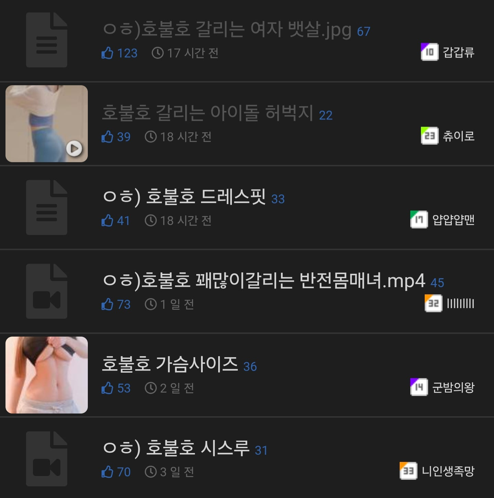
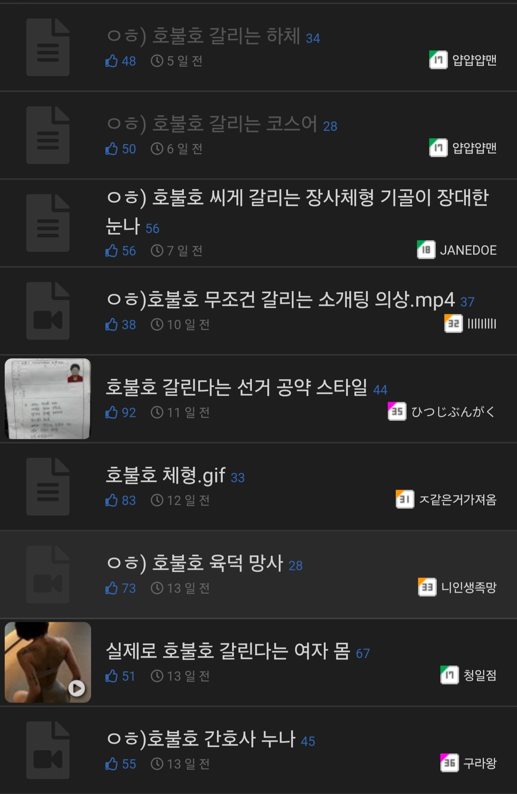

개드립에 자주보이는 호불호의 뜻은
개쩌는거 올려놨으니 빨리와서 확인하라는 뜻임
웜메 시부랄거 개쩌는게 있다 안카요


개드립에 자주보이는 호불호의 뜻은
개쩌는거 올려놨으니 빨리와서 확인하라는 뜻임
웜메 시부랄거 개쩌는게 있다 안카요
와 근데 스크롤하면서 본 여자들 다 호일 확률 몇프로임?
90%


막짤 기저귀같은 수영복 너무 시름
어떤 태그보다도 반갑다
호 vs 불같은 호


와 이게 진정한 ㅎㅂㅎ 진짜 사진 몇개 불호임
니말이 맞다


아직 잘모르겠어 설명이 좀더필요할듯
ㅇㅎ 안붙히냐!!!! 와이프한태 잡혀갈뻔했다
간혹 너무 폭유나 너무 근육질여자 이런건 난 불호긴 함.
존나 좋다...
액기스만 다 모아왔네 개추
농농단에겐 극독임